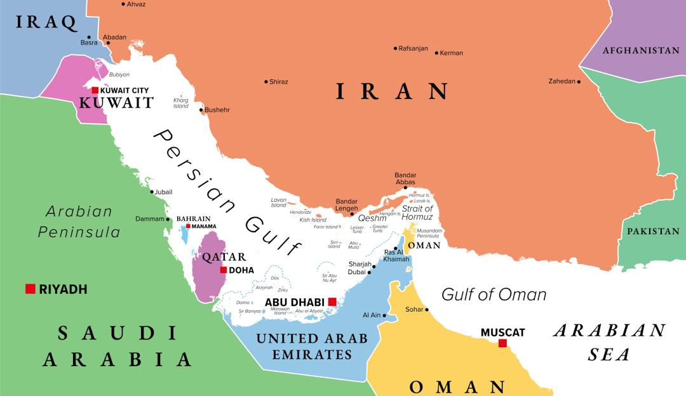
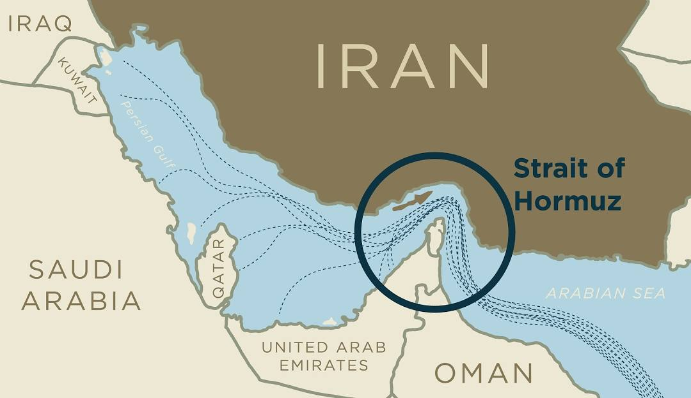
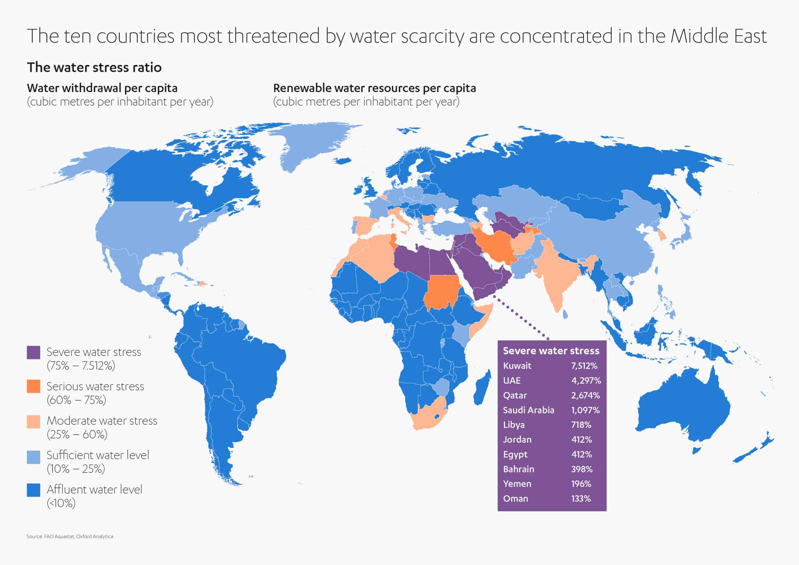
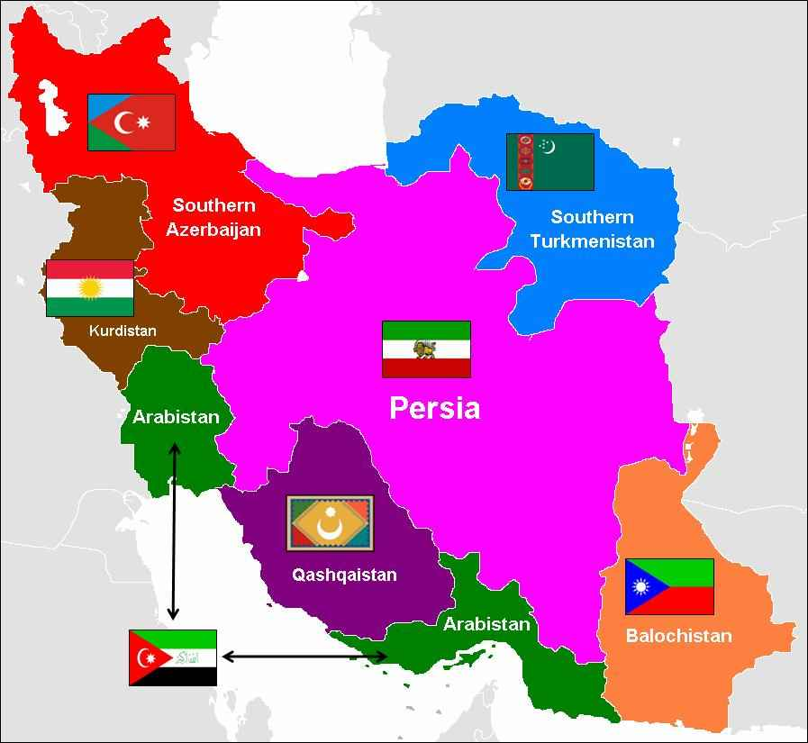

I. The Decapitation Strike and the Iranian Response
U.S. and Israeli forces launched a coordinated 'decapitation strike' in Tehran early Saturday morning (28th Feb 2026), deploying a high-stakes aerial bombardment aimed directly at the Supreme Leader of Iran, Ayatollah Khamenei.
The Death of the Supreme Leader
While initial reports involved disputes over the outcome, Iranian state media eventually confirmed the leader’s death.
The Strike: Intelligence-led aerial bombardment targeted the leader’s location.
The Narrative of Martyrdom: Despite his advanced age (86) and reported illness (prostate cancer), the Iranian state has framed his death as a conscious choice of sacrifice. He remained in Tehran alongside family members — including his daughter, son-in-law, and grandchildren — who also perished.
Strategic Perception: While U.S. and Israeli officials have hailed the operation as a definitive success in dismantling enemy leadership, the Iranian state has countered this narrative by officially sanctifying the event as a supreme act of martyrdom.
Religious Implications: Shia vs. Sunni
To understand the Iranian response, one must distinguish between the two primary branches of Islam:
Sunni Islam: Comprises approximately 90% of the global Muslim population.
Shia Islam: The minority branch, central to Iran's national identity. Historically, the Shia have perceived themselves as a persecuted minority.
The Theology of Sacrifice: A core value of the Shia faith is the concept of the martyr. This serves as a galvanizing force that justifies Jihad (struggle or holy war) for the common good and the defense of the faith.
"For the Iranians, this is not a biblical war. This is not an economic war. This is not a war of resistance. This is a jihad."
💡 Extras
The term "decapitation strike" in military theory refers to a strategy aimed at removing the leadership or command-and-control of an adversary, under the assumption that the organization will collapse without its "head." In the context of asymmetrical or religious warfare, however, this often results in the "Hydra effect," where new, more radicalized leadership emerges.
II. Collateral Damage and Escalation
Simultaneous to the leadership strike, an explosion at a primary school in southern Tehran resulted in the deaths of approximately 165 young girls. While Israel claims it was an accident or a stray missile, the Iranians insist it was a deliberate act of terror. Regardless of the technical cause, this event has served to "all-in" the Iranian population, fostering a total commitment to the war effort and a refusal to negotiate.

III. The Vulnerability of the GCC (Gulf Cooperation Council)
The GCC—comprising nations such as the UAE (Dubai, Abu Dhabi), Bahrain, Qatar, and Kuwait—has historically operated on an economic model of "neutrality" under American military protection.
The Collapse of the Dubai Model: Dubai’s wealth is built on logistics, finance, tourism, and aviation. It relies entirely on the reputation of being a "safe haven." Iranian strikes against GCC infrastructure have shattered the perception of safety. Wealthy expatriates and investors are expected to pivot toward safer hubs like Singapore or Tokyo, as Dubai is no longer considered a viable long-term residence due to its proximity to Iranian strike capabilities.
Bahrain, The Potential Flashpoint: Two critical vulnerabilities make Bahrain the likely first domino to fall in a widening conflict. First, its role as a base for the U.S. Fifth Fleet places it directly in the crosshairs of Iranian military retaliation. Second, a sharp demographic divide—a majority Shia population governed by a Sunni minority—creates a tinderbox for internal unrest. The reported death of the Ayatollah provides the exact religious spark needed to transform this long-standing tension into a full-scale domestic uprising.
IV. The Strategic Geography of the Strait of Hormuz
The Strait of Hormuz is a narrow waterway (33 km wide) that serves as the "nexus of the world."
Economic Stranglehold
Oil Flow: 20% of global oil passes through this strait.
Asian Dependency: India relies on this region for 60% of its oil, China for 40%, and Japan for 75%. If the strait remains closed, the Japanese economy is projected to collapse within 8 to 9 months.
The Petrodollar Collapse: Because the GCC mandates oil be purchased in U.S. dollars, the collapse of the GCC and the closure of the strait would effectively end the dollar's global dominance.

Survival Requirements: Food and Water
The GCC is an "artificial construct" that cannot survive in isolation. 80% of food is imported. Without the strait, the population faces starvation. The region has virtually no natural fresh water. It relies on desalination plants for 60% of its supply. These plants are highly localized, fragile, and easily targeted by low-cost drone technology.
🔄 Alternative Ideas / View
While the text suggests the U.S. Fifth Fleet cannot defend its bases, modern carrier strike groups and land-based Aegis Ashore systems are specifically designed for ballistic and cruise missile defense. However, the sheer volume of "saturation attacks" (using thousands of cheap drones) discussed in the lesson represents a credible modern challenge that can overwhelm even sophisticated defense systems.
V. The Iranian Offensive Strategy: Target Categories
The Iranian military strategy is designed to exploit the physical vulnerability of the GCC. While Iran operates as a "mountain fortress" where it can hide its offensive capacity (missiles and drones), the GCC is a flat, exposed desert. Iran is targeting three critical pillars to ensure victory:
American Military Bases
Iran exploits the geographical vulnerability of U.S. bases, which sit exposed on flat desert terrain. While Iran hides its assets within a "mountain fortress," these static American positions are considered indefensible against a coordinated missile and drone barrage.
Oil and Energy
The region’s sprawling energy infrastructure is a soft target for low-cost drone technology. Because the GCC lacks the defensive depth to protect such vast fields, Iran can easily cripple the primary economic engine of these states with minimal effort.
Water Infrastructure
Water is the GCC’s most critical vulnerability. The region relies on a few localized desalination plants for 60% of its freshwater; destroying these fragile "water factories" with drones would trigger an immediate, existential humanitarian collapse.
VI. Economic Warfare and the Petrodollar
The Iranian path to victory relies on the total collapse of the "American Empire" through the destruction of the petrodollar.
The Petrodollar Mechanism: The U.S. dollar's value is based on the GCC requirement that oil be purchased in dollars.
The Goal of the GCC Attacks: Even though the GCC claims neutrality, they house American military bases and allow the use of their airspace for attacks on Iran.
Strategy for Victory: By destroying the GCC's infrastructure and closing the Strait of Hormuz, the Iranians aim to bankrupt the American economy.
"At any point in this war, the Iranians can choose to just destroy the entire GCC and there's nothing that anyone can do about it."
VII. Iran’s Fundamental Vulnerability: The Water Prison
While Iran is strategically a "mountain fortress," its geography also acts as a potential "mountain prison" due to a critical lack of water. Iran suffers from long-term climate-driven drought. Targeting Civilian Infrastructure: The U.S. and Israeli strategy focuses on destroying civilian infrastructure like Iran's water supply, dams, reservoirs, power plants, and hospitals. The goal is to make the country "uninhabitable," forcing the population to rebel against the government or creating a massive refugee crisis.
💡 Extras
The instructor frames this as a "Game of Chicken." Since both sides have the potential to destroy one another (Iran destroying the GCC's water/economy and the U.S. destroying Iran's water/habitability), the outcome depends on who is willing to go further.
VIII. Demographics and Resolve: Shia vs. Expatriates
A central point of the lesson is the "unfair matchup" regarding the resolve of the respective populations.
Iranian Resolve: Because the Iranians are Shia and have had their leader killed, they are motivated by martyrdom and are willing to "go very, very far."
GCC Materialism: In contrast, the GCC populations are described as materialistic and comprised of 90% expatriates (in cities like Dubai). These residents have no loyalty to the land and will "run away" as soon as they suffer, leading to a collapse of the social fabric.
IX. The Impending Escalation: Troops and Nukes
The conflict is currently poised to expand into a global confrontation (World War III). Because the global economy depends on the oil flowing through the "Strait of Hormuz," powers like Japan, India, and China cannot remain neutral. If the strait remains closed, the Japanese economy is projected to collapse within months.
The Ground War Question: The big question is whether the U.S. will send 500,000 to 2 million troops for a full-scale invasion.
Nuclear Escalation: If either side faces total defeat, the use of "nuclear weapons" becomes a statistical probability.
Global Alliances: As European powers (Germany, France, Britain) consider entering the war, it is expected that Russia and China will enter on the side of Iran due to the geopolitical importance of the Middle East.
X. The Hallucination of Empire and Rigid Doctrine
The American military presence in the Middle East relies more on the perception of power than on functional defensive capabilities.
The Purpose of Bases: Originally, these outposts were established to stabilize local monarchies against internal dissent and to project American authority.
The "Aura" of Empire: Empire is described as an "aura". It functions only if people fear it; Once a nation like Iran proves it can successfully strike back — attacking U.S. bases in Bahrain, Qatar, and the UAE — the "illusion" of invincibility is shattered.
The Failure of "Shock and Awe": The U.S. uses a "decapitation" doctrine (cutting off the head so the body falls). However, Iran has decentralized its command and control. Taking out Tehran does not stop the regional units from fighting.
XI. Technical Asymmetry: Shahed Drones vs. THAAD
The disparity in spending and technology creates a "silly" economic reality for the U.S. military.
Feature
Iranian Shahed Drone
American THAAD/Patriot
Cost
$35,000 – $50,000
$1,000,000 per missile
Production
500 per day (80,000 in stock)
Slow, bureaucratic, expensive
Mobility
Launched from trucks; easy to hide
Large, slow, and easy to target
Outcome
Can destroy a hotel or oil field
Often requires 2-3 missiles to hit one drone
Corruption and Inefficiency: The U.S. military is described as "corrupt," prioritizing spending over winning. The systems are designed for "flexing" (impressing/scaring) rather than actual resilience or innovation.
Urban vs. Rural Targeting: By targeting the urban, educated, and progressive populations — who were the most likely to support a "regime change" — the West is effectively destroying its own potential allies. Conversely, the rural, religious "Shia militants" are left largely untouched. These groups, motivated by the martyrdom of Khamenei, are the ones who will "fight to the death" and commit to a lifelong jihad, ensuring the war never truly ends.

XII. The Global Water Crisis and Regional Vulnerability
The conflict is fundamentally a "War for Water," where environmental stress is used as a primary weapon.
The GCC's Extreme Water Stress
The GCC nations exist in a state of "unnatural" survival, consuming vastly more water than their environments provide.
The 100% Sustainability Threshold: A sustainable nation uses only 10% of what the environment produces.
The Kill Switch: Iran does not need to defeat the U.S. military; it only needs to destroy desalination plants. Without them, the GCC is physically destroyed.
Iran’s Weak Point: Lake Urmia
Despite its mountain defenses, Iran suffers from 72% water stress and severe drought. Lake Urmia of Iran, once the sixth-largest saltwater lake, has nearly disappeared since 1984, leaving a dry basin. The U.S. and Israel aim to exploit this by destroying dams and reservoirs, turning the "mountain fortress" into a dehydrated "prison."
XIII. The U.S./Israeli Grand Plan: Fractionalization
The Western strategy is designed to permanently eliminate Iran as a "coherent nation-state."
Ethnic Balkanization: Iran is a diverse nation of Persians, Azeris, Kurds, Baluchis, and other groups. The U.S. intends to sponsor these borderland minorities with money and weapons.
Ethnic Enclaves: The goal is to divide Iran into small, competing ethnic archives.
Permanent Conflict: By dividing the nation and destroying the water supply, the U.S. ensures these groups will "fight over water forever," rendering Persia incapable of being a regional threat.

XIV. The Iranian Grand Plan: Global Jihad and Pax Islamica
Iran’s response seeks to expand the war from a regional defense to an international religious revolution.
Global Shia Uprising
Following the death of Ayatollah Khamenei, Iran has successfully mobilized Shia populations globally. By framing the leader’s passing as "martyrdom," the state established a religious pretext for a long-term jihad against the American Empire. This immediate escalation has already led to violent attacks on U.S. embassies in Pakistan and Iraq, signaling a shift from localized conflict to a protracted, global war of vengeance.
Overthrowing the Client States
Iran aims to unify the broader Muslim world (Sunni and Shia) by targeting the "dictatorships" that serve as American clients. By rallying populations who hate their pro-Western governments (Saudi Arabia, Egypt, Algeria), Iran seeks to establish a Pax Islamica, making Iran the leader of a unified Islamic world (end goal).
XV. Economic Warfare: The GCC-Wall Street Connection
The most immediate path to destroying the "American Empire" is the collapse of the U.S. financial system.
The Investment Cycle: The GCC sells oil for USD and reinvests those dollars into the U.S. Stock Market.
The Tech Engine: GCC wealth is heavily invested in the "Magnificent Seven" AI companies (Nvidia, Microsoft, Google, Apple, etc.), which account for 25% of U.S. market growth.
The Strategy: If Iran cuts off the oil or forces the GCC to spend its reserves on defense, these investments will be withdrawn. This would trigger a Stock Market Collapse and a subsequent economic depression in America.
XVI. Global Consequences and Alliances
The war is inextricably linked to other global theaters, specifically the Ukraine War.
Europe's Dependency: Since Europe no longer buys energy from Russia, it is entirely dependent on the GCC. If the GCC falls, Europe goes bankrupt. This forces the UK, France, and Germany to enter the war.
The Russia-China Dynamics: Russia cannot allow Iran to fall, as they believe they will be the next target. China remains strategically neutral, having built a system that can adapt to either outcome.
💡 Extras
As of the current date, March 5, 2026, the S&P 500 has seen its sharpest three-day decline in history as GCC sovereign wealth funds began liquidating tech assets to fund emergency water and food imports.
Glossary
Geopolitics: The study of the effects of Earth's geography (human and physical) on politics and international relations.
Petrodollar System: The global practice of trading oil in U.S. dollars, which reinforces the dollar's status as the world's reserve currency.
Asymmetric Warfare: War between belligerents whose relative military power or strategy and tactics differ significantly.
Martyrdom (Shia Context): The belief that death in the service of a holy cause is a supreme victory, not a loss.
The Concept of Jihad: In this context, a holy war involving self-sacrifice and total commitment against a perceived "Great Satan."
MAD (Mutually Assured Destruction): The Cold War doctrine where nuclear-armed powers avoid direct conflict due to the guarantee of total mutual annihilation.
Military Doctrine: The fundamental principles by which military forces guide their actions in support of national objectives.
Decentralized Command: A military structure where local units operate independently, making the "decapitation" of central leadership ineffective.
Water Stress: A measure of the amount of water withdrawn by households, industry, and agriculture compared to the available renewable water sources.
Pax Islamica: A conceptual Islamic peace or world order unified under religious governance, intended to replace Western hegemony.